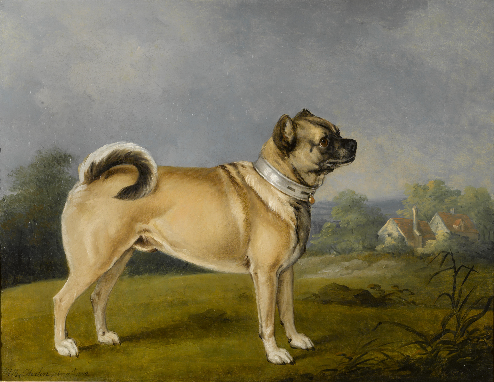
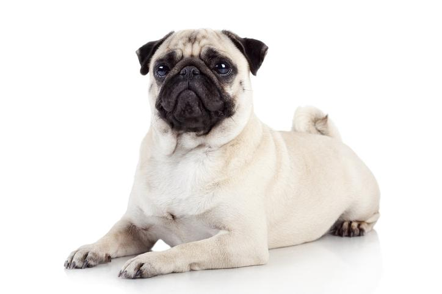
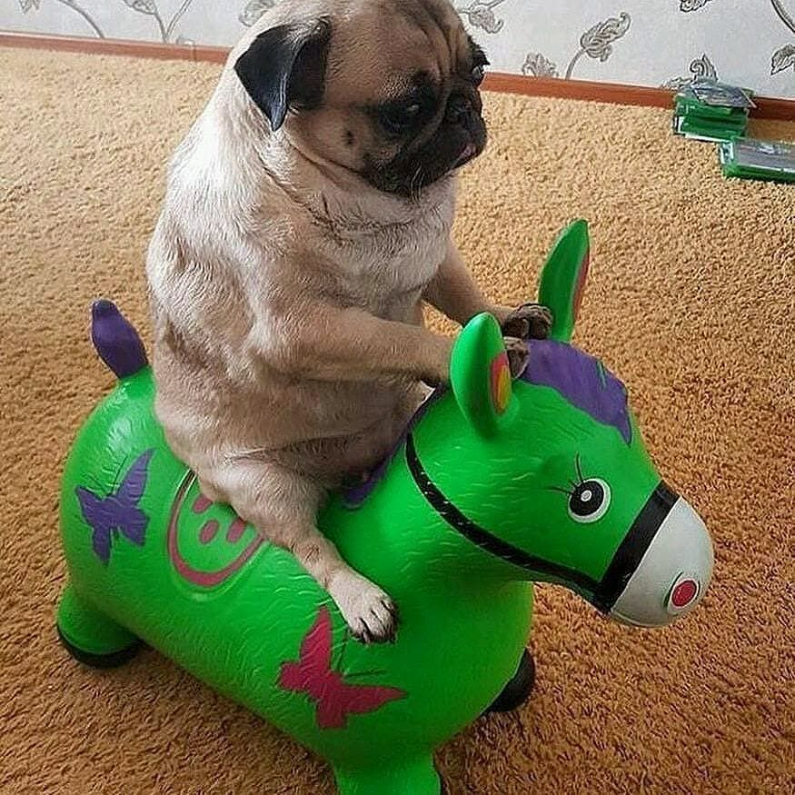

1 / 4

Caption Text
2 / 4

Caption Two
3 / 4

Caption Three
4 / 4

Caption four
Perros de hocico corto similares al pug actual "ya fueron documentados por Confucio en el año 551 AC". La raza se origina precisamente en China, pero en el siglo XVI comerciantes holandeses llevaron ejemplares a Europa y actualmente los pug son particularmente buscados en Reino Unido, aunque su popularidad es global.
PD estan chistosios y bonitos